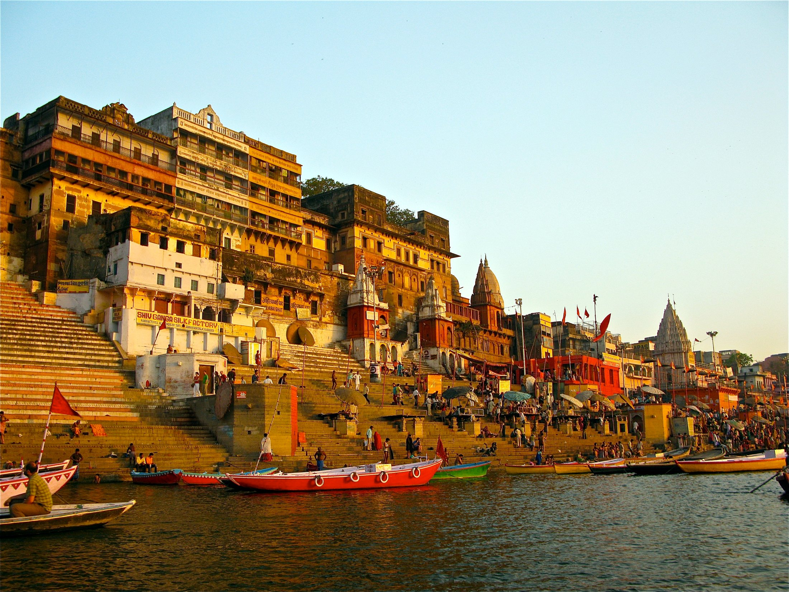

Flames, bells, and a thousand quiet moments. Here’s how to experience the city’s evening ritual with care.
A sunrise boat ride, a cup of chai, and the simple joy of slowing down.

INDIA, AT ITS MOST SOULFUL
Sunrise on the Ganges. Stories in every alley.
Discover a city that stays with you long after you leave.
Welcome to Varanasi. Sacred, surprising, and wonderfully alive. A journal for curious travellers who want to go a little deeper.
✳FRESH FROM VARANASI
New notes, timely offers, and useful information
from the editorial desk.
STORIES FROM THE CITY
Little windows into the people, places,
and rituals that make Kashi, Kashi.
Flames, bells, and a thousand quiet moments. Here’s how to experience the city’s evening ritual with care.
A sunrise boat ride, a cup of chai, and the simple joy of slowing down.
Kachori, jalebi, and the flavours that make a Banarasi morning.
DON’T JUST SEE IT. BE HERE.
Leave room for the unexpected. These are the moments worth making time for.
Make it your journey ↗YOUR FIRST CHAPTER
A gentle starting point.
Always leave a little room to wander.
COME CURIOUS. ARRIVE PREPARED.
October to March usually brings cooler weather. Winter mornings can be foggy; summer is hot and monsoon rain can affect river activities.
Fly to Lal Bahadur Shastri Airport (VNS), often via Delhi or Mumbai. Prearrange a transfer; old-city stays may require a final walk through narrow lanes.
Dress modestly at sacred sites. Ask before photographing people and avoid photographing cremations. Check individual temple entry rules.
Carry some Indian rupees and use sealed drinking water. Agree boat fares in advance and request a life jacket. Check visa rules on official Indian government sites.
LET THE CITY SURPRISE YOU
A little preparation. A lot of open-hearted exploring.
Ghats: Ken Wieland · CC BY-SA 2.0. Morning Aarti: Titodutta · CC0. Dashashwamedh Ghat: Saaremees · CC BY-SA 4.0. Images displayed cropped. Food photograph via Unsplash.